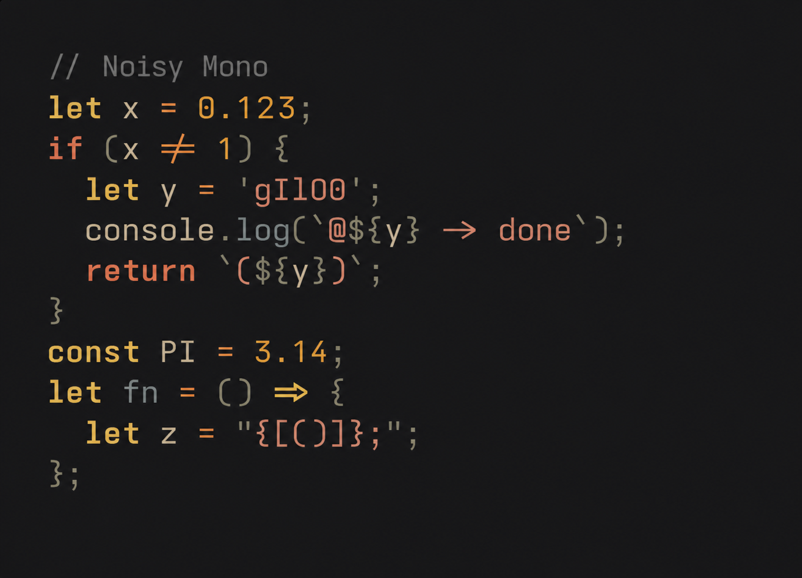
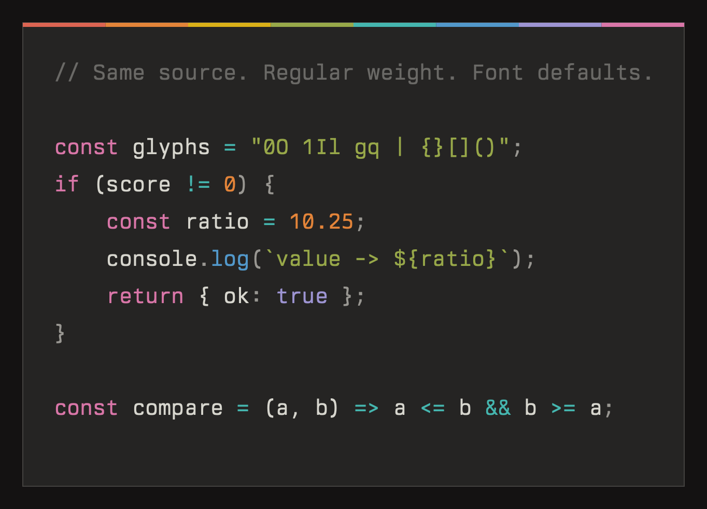

Open-source typeface · OFL 1.1
A free, open-source monospace font crafted to match Berkeley Mono's aesthetic. Built by configuring Iosevka. Three widths, ten weights, italic variants, and Nerd Font support. Independently maintained as Noisy Mono.
Independently maintained · Built in public →
Noisy Mono
Berkeley MonoSame source, canvas, size, Flexoki Dark colors, and Core Text renderer. Exact font versions are in the render provenance.
Not sure which file? Start with NoisyMono.zip.
| File | Best for | Downloads | |
|---|---|---|---|
| NoisyMono.zip | Editor / IDE — VS Code, JetBrains, Zed, Sublime Text | — | Download → |
| NoisyMono-NerdFont.zip | Terminal with icons — Neovim, Starship, zsh | — | Download → |
| NoisyMono-Term.zip | Strict fixed-width terminals and font pickers | — | Download → |
| NoisyMono-Term-NerdFont.zip | Strict fixed-width terminal with single-cell icons | — | Download → |
| NoisyMono-NL.zip | Apps that can't disable ligatures — Xcode | — | Download → |
| NoisyMono-NL-NerdFont.zip | Same, with Nerd Font icons | — | Download → |
| NoisyMono-Web.zip | Web / CSS — curated Latin/technical WOFF2 + stylesheet | — | Download → |
| NoisyMono-Web-Full.zip | Web / CSS — complete glyph repertoire | — | Releases → |
Every weight available in Normal, SemiCondensed, and Condensed — each with a matching italic.
| Weight | CSS | Sample |
|---|---|---|
| Thin | 100 | The quick brown fox |
| ExtraLight | 200 | The quick brown fox |
| Light | 300 | The quick brown fox |
| SemiLight | 350 | The quick brown fox |
| Regular | 400 | The quick brown fox |
| Medium | 500 | The quick brown fox |
| SemiBold | 600 | The quick brown fox |
| Bold | 700 | The quick brown fox |
| ExtraBold | 800 | The quick brown fox |
| Black | 900 | The quick brown fox |
user@host:~$ cat processes.txt user@host:~$ column -t -s '|' processes.txt ┌───────┬───────┬──────┬──────┬──────────────────┐ │ PID │ USER │ %CPU │ %MEM │ COMMAND │ ├───────┼───────┼──────┼──────┼──────────────────┤ │ 4892 │ user │ 2.3 │ 1.2 │ iTerm2 │ ├───────┼───────┼──────┼──────┼──────────────────┤ │ 7321 │ user │ 1.8 │ 0.8 │ Code Helper │ ├───────┼───────┼──────┼──────┼──────────────────┤ │ 1024 │ user │ 0.9 │ 2.1 │ Google Chrome │ ├───────┼───────┼──────┼──────┼──────────────────┤ │ 3891 │ user │ 0.5 │ 0.3 │ zsh │ ├───────┼───────┼──────┼──────┼──────────────────┤ │ 12800 │ user │ 0.3 │ 0.5 │ Slack │ └───────┴───────┴──────┴──────┴──────────────────┘
Normal/Hinted/ for standard-DPI, Normal/Unhinted/ for Retina).ttf files inside, double-click any font, then click Install Font — or drag them all into Font Book.ttf files, right-click, and choose Install for all users.ttf files to ~/.local/share/fonts/fc-cache -fv to refresh the font cacheNoisy Mono Term uses strict Fontconfig-compatible spacing so every non-combining glyph occupies one cell. It exports the glyph names Kitty requires for programming ligatures and is the best choice when a fixed-width font picker does not list the standard family.
Strict spacing omits a small set of inherently wide symbols. Use the standard family when complete glyph coverage matters more than terminal classification.
Yes. The slashed zero is the default glyph in Noisy Mono, so it works without an OpenType feature or application setting.
Install all fonts in your chosen folder — your OS exposes the full weight axis (Thin → Black) automatically. Start with Normal/ if you're unsure.
The font is built automatically via GitHub Actions on every version tag. To build locally:
Output in the corresponding family folders under Iosevka/dist/.